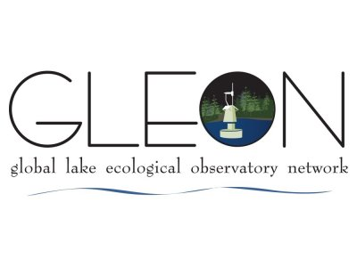

Zooplankton as Indicators Group (ZIG)
ZIG was formed in November 2019 at the Global Lake Ecological Observatory Network GLEON all-hands meeting in Huntsville, Canada with three co-leads (Steph Figary, Michael Meyer, and Warren Currie) and has since grown to a team of over 100 aquatic scientists from around the world interested in understanding the uses of zooplankton as indicators in lakes and reservoirs. This project has several goals:
Develop a global dataset: Our goal is to develop a global zooplankton dataset to test which aspects of zooplankton community structure are the most sensitive, and widely applicable, indicators of environmental change. ZIG’s data call to GLEON can be found here. After harmonizing all of the submitted datasets using github, ZIG will publish a data product with the data that can be made public.
Publish a main synthesis paper: The main goal of ZIG is to determine the reliability of existing zooplankton indicators (e.g., % calanoids) on a global scale using existing data from the GLEON network. This will be written and submitted as the ‘main synthesis paper’ that all participants are welcome to contribute to.
Launch follow-up questions: There are many additional questions that the ZIG global dataset can be used to answer about zooplankton as indicators. After the first two goals of the project are met, ZIG’s focus will shift to the follow up questions that ZIG participants have outlined. We see the potential for these collaborations to continue well into the future.
Here’s a map of our submitted (blue) and expected (orange) datasets. We are still looking for new collaborators in the regions without dataset coverage.

Interesting in getting involved or submitting data?
Please reach out! ZIG is still accepting new members and datasets. Submitting data is not required for joining the effort. Additionally, we have materials to share on on request, including the authorship guidelines/data sharing policy, meeting materials (see table below), data submission template, and data submission instructions.
Project log
| Date | Action | Notes |
|---|---|---|
| TBD | Data call ended | |
| 11/2021 | Meeting: GLEON 2021 All-hands | Project updates. >100 members |
| 7/2021 | Meeting: Data Harmonization Team | Walked through data harmonization process |
| 6/2021 | Meeting: Data Harmonization Team | Showed new github repo for project |
| 4/2021 | Meeting: Data Harmonization Team | Launched the Data Harmonization team |
| 3/2021 | Meeting: ZIG all-hands | Discussed data call response and forming a data harmonization team |
| 1/2021 | Data call to GLEON | |
| 12/2020 | Meeting: ZooST + Research champions | Developed data call |
| 10/2020 | Meeting: GLEON 21.5 All-hands | Discussed data call. ~60 members |
| 10/2020 | Meeting: Research champions | Decided on main synthesis question |
| 9/2020 | Meeting: ZIG all-hands | Discussed research ideas |
| 7/2020 | Meeting: ZIG all-hands | Launched form to request research ideas |
| 5/2020 | Call for participants to GLEON | ~40 members |
| 11/2019 | ZIG formed at GLEON 21 in Huntsville, Canada | ~15 members |